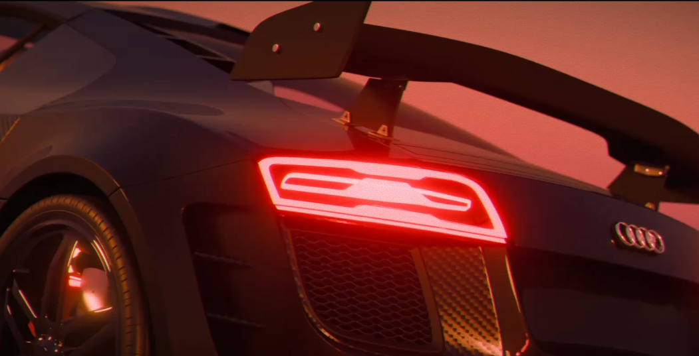
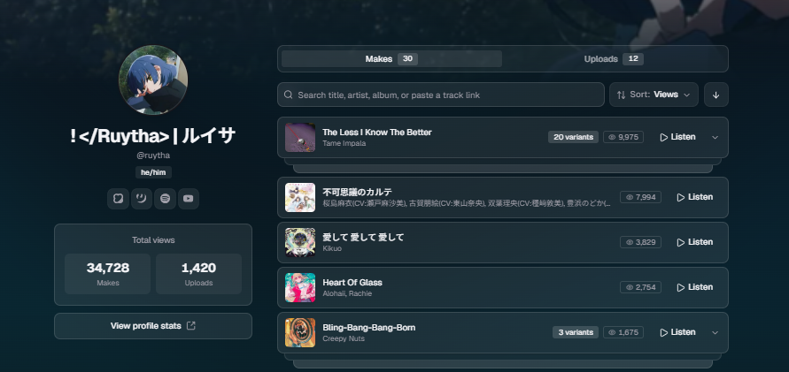
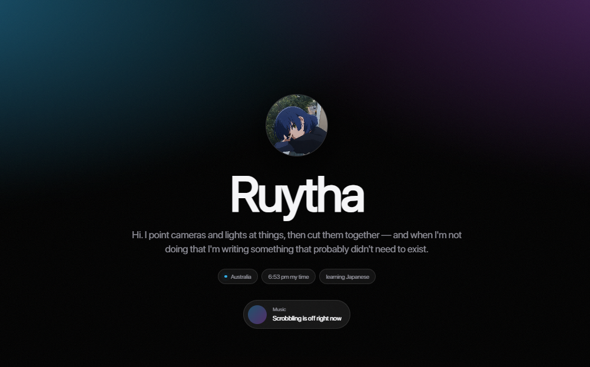
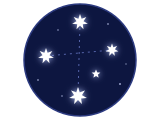
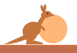
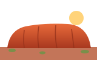

Featured artist
Tame Impala
This has to be one of the best artists oat.
Ruytha is an Australian director, editor and lighting artist who makes short films and music videos, and builds the tools to make them.
Most projects run end to end through Ruytha's hands: animating and rigging in Blender, cutting in DaVinci Resolve, Premiere Pro and After Effects, lighting both virtual sets and real ones, and shooting stills on a Canon EOS 7D. On the technical side, Ruytha writes HTML, CSS, JavaScript and Python, and is currently developing VCap Motion, a VR motion capture system that will power the upcoming YouTube series Borderline Obsession.
Ruytha also syncs and reviews TTML lyric files for Spicy Lyrics and is studying Japanese. Open to collaborations on editing, lighting and short-form film. The quickest way to get in touch is Discord, @ruytha.
hiii, i'm ruytha ♡ an aussie femboy who makes short films and music videos, and gets way too invested in lighting them.
i animate and rig in blender, edit in resolve, premiere and after effects, and point my canon 7d (or my iphone 12, no shame) at anything pretty. i also write code, which is how this website exists. claude does a lot of the heavy lifting tho lol.
right now i'm building vcap motion, a vr mocap thing, so i can finally make borderline obsession. in between i sync lyrics for spicy lyrics, learn japanese (がんばります！), and play rdr2 and forza horizon 6 with tame impala on in the background. say hi on discord, i don't bite ♡
some straight BANGERS
pulled live from my last.fm, no judging pls
What I've actually been listening to.
Featured artist
This has to be one of the best artists oat.
the things i'm mostly good at. *mostly
I make short films and music videos.
DaVinci Resolve, Premiere and After Effects. DM me on Discord if you want to collab.
Virtual sets and real ones.
Mostly animation and rigging.
A Canon EOS 7D and an iPhone 12.
Sometimes I open FL Studio and close it 5 minutes later. Sometimes I actually make a remix.
HTML, CSS, JavaScript and Python.
borderline obsession is waiting on vcap, no pressure
A VR motion capture system I'm building. Borderline Obsession gets made with it.

A short YouTube series, written and edited by me. Production starts once VCap Motion is stable.

I've been syncing songs for Spicy Lyrics for a while, and ig this counts as a project.

ig this is a project, but Claude is doing most of the work lol.
Shot on a Canon EOS 7D and an iPhone 12.
This is what I do for Spicy Lyrics, but tiny. Press play, wait for the count-in, then tap every word right as it lands.
headphones help!
Anime and games I keep going back to. Open one for the details.
the starred ones are the best, fight me
Anywhere on this list is fine. The Discord server is where I'm most active tho.
discord = fastest reply
Leave a note on the wall. Be nice, I read every one.
sign it pls



